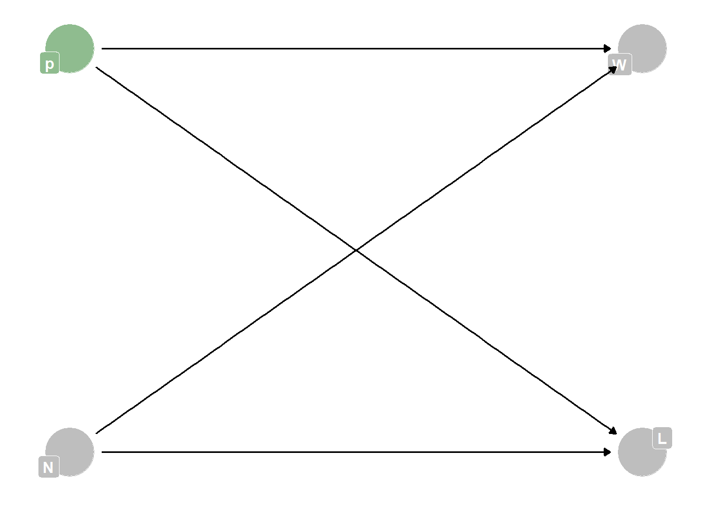
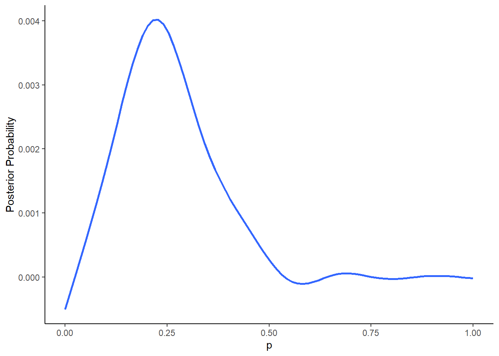
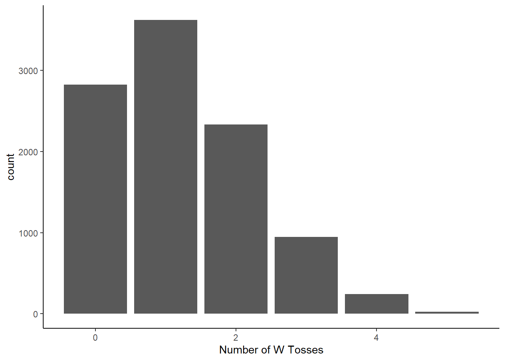
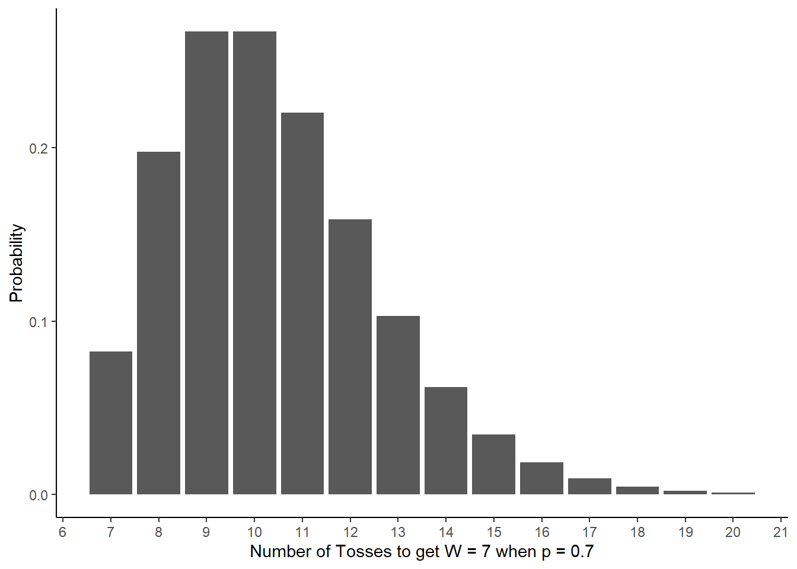

Homework - Week 01
Q1
Suppose the globe tossing data had turned out to be 3 water and 11 land. Construct the posterior distribution.
DAG:
Posterior:
# create the sample manually
N_W <- 3
N_L <- 11
sample <- c(rep("W", N_W), rep("L", N_L))
# use compute_posterior with the sample function to compute the posterior
compute_posterior <- function(the_sample, poss = seq(0, 1, length.out = 1000)){
W <- sum(the_sample=="W")
L <- sum(the_sample=="L")
ways <- sapply(poss, function(q) (q*4)^W * ((1-q)*4)^L)
post <- ways/sum(ways)
bars <- sapply(post, function(q) make_bar(q))
data.frame(poss, ways, post = round(post, 3), bars)
}
post <- compute_posterior(sample)
ggplot(post) +
geom_smooth(aes(x = poss, y = post), se = F) +
labs(y = "Posterior Probability", x = "p") +
theme_classic()
Q2
Using the posterior distribution from Q1, compute the posterior predictive distribution for the next 5 tosses of the same globe. I recommend you use the sampling method.
Sampling:
# first sample your posterior
n <- 1e4
samples <- sample(post$poss, prob = post$post, size = n, replace = T)
# now simulate 5 tosses using the probability of each possible value
N_toss <- 5
posterior_predict <- data.frame(probpredict = rbinom(n, size = N_toss, prob = samples))
# plot probability for each number of water samples you will get in 5 tosses
ggplot(posterior_predict) +
geom_bar(aes(x = probpredict)) +
labs(x = "Number of W Tosses") +
theme_classic()
Q3 (optional):
Suppose you observe W = 7 water points, but you forgot to write down how many times the globe was tossed, so you don’t know the number of land points, L. Assume that p = 0.7 and compute the posterior distribution of the number of tosses N. Hint: Use the binomial distribution.
N_tosses <- seq(7, 20)
prob_tosses <- data.frame(N_tosses = N_tosses, prob = dbinom(x = 7, size = N_tosses, prob = 0.7))
ggplot(prob_tosses) +
geom_col(aes(x = N_tosses, y = prob)) +
labs(x = "Number of Tosses to get W = 7 when p = 0.7", y = "Probability") +
scale_x_continuous(n.breaks = 13) +
theme_classic()